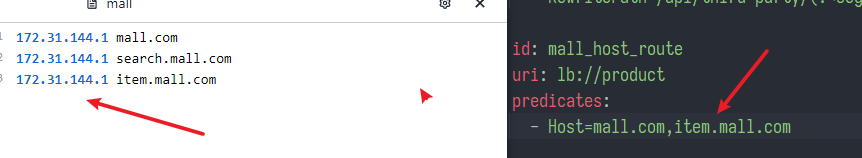
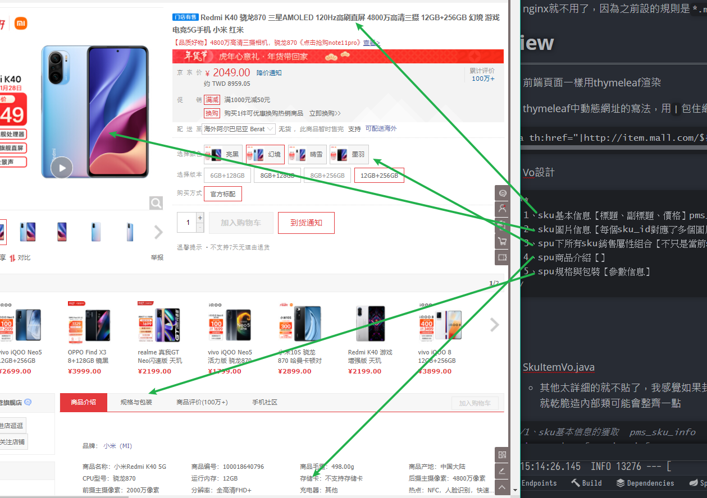
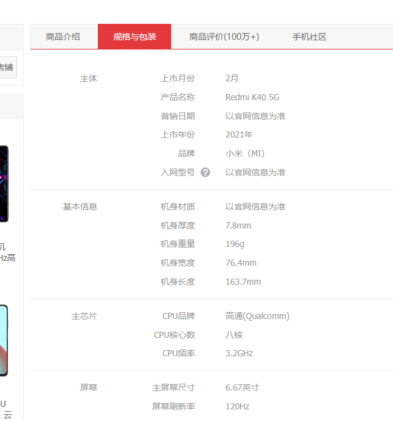
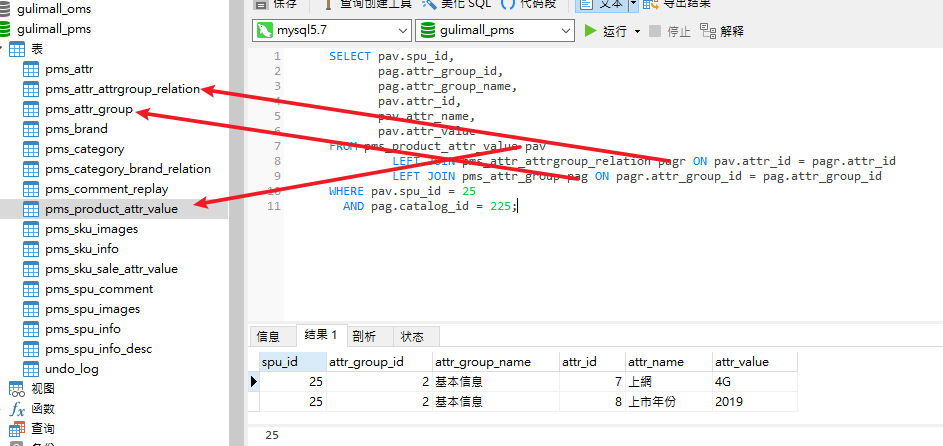
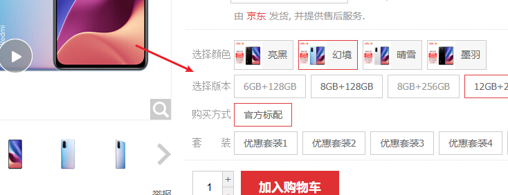
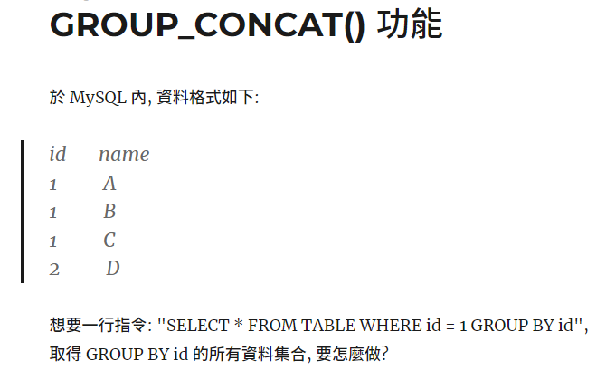
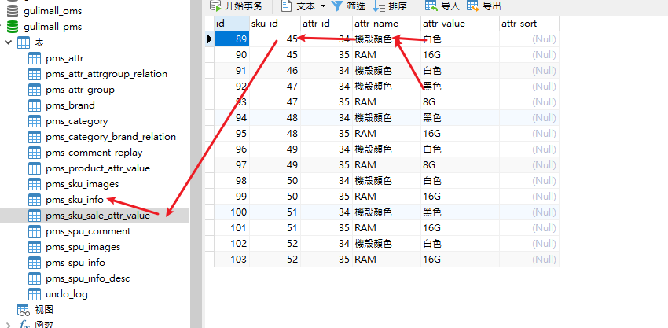
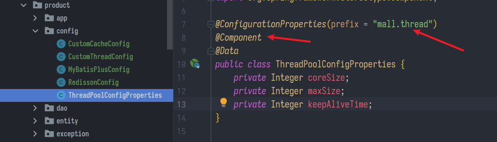
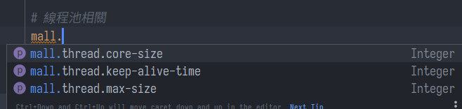
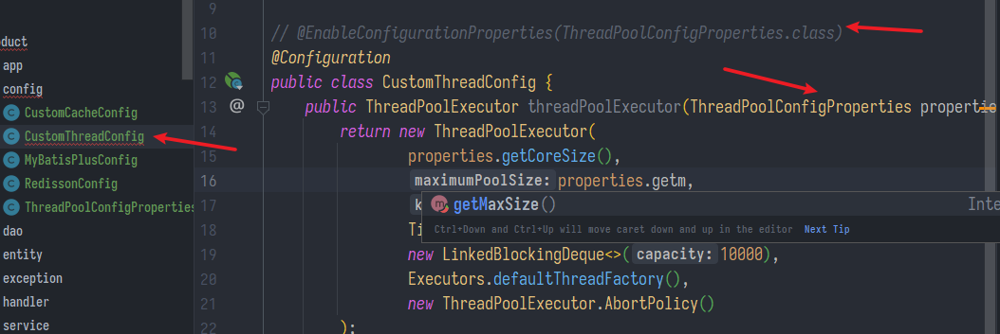

商品詳情
SpringBoot微服務項目筆記-15
商品詳情
View
- 商品詳情也是子網域，設定網關:

- nginx就不用改了，因為之前設的規則是
*.mall.com - 導入頁面
item.html與靜態資源 - 前端頁面一樣用thymeleaf渲染
- thymeleaf中動態網址的寫法，用
|包住網址前後，中間${參數}
<a th:href="|http://item.mall.com/${product.skuId}.html|">
- 格式化數字，前面3是整數位，2是小數位
<span th:text="${#numbers.formatDecimal(item.info.price,3,2)}">
- sku組合切換，太偏前端了，有用到再來學
https://www.bilibili.com/video/BV1np4y1C7Yf?p=208&spm_id_from=pageDriver
- 另外我發現thymeleaf是不是有病，一般的HTML註解
<!--他竟然還是會解析，不顯示但是會解析 - 可以參考 https://blog.csdn.net/sun_jy2011/article/details/40299821
- 比如一塊代碼有問想先註解掉，整塊用快捷鍵選起來
ctrl+/先註解掉還不行，他就是硬要解析，如果有BUG就會一直讀出BUG，真的是有病耶，這樣設計是腦子被門夾到嗎。一定要用下面這樣的格式包起來的才不會解析
<!--/*-->
xxxx
OOOO
<!--*/-->
Controller
- ItemController.java
- 我才搞懂
return "item"是因為前面說的thymeleaf自動會加上前後綴，就相當於templates/item.html
- 我才搞懂
@GetMapping("/{skuId}.html")
public String skuItem(@PathVariable("skuId") Long skuId, Model model) throws ExecutionException,
InterruptedException {
System.out.println("準備查詢" + skuId + "詳情");
SkuItemVo vos = skuInfoService.item(skuId);
model.addAttribute("item", vos);
return "item";
}
Model
- Vo設計

/**
* 1、sku基本信息【標題、副標題、價格】pms_sku_info
* 2、sku圖片信息【每個sku_id對應了多個圖片】pms_sku_images
* 3、spu下所有sku銷售屬性組合【不只是當前sku_id所指定的商品】
* 4、spu商品介紹【】
* 5、spu規格與包裝【參數信息】
*/
- SkuItemVo.java
- 其他太詳細的就不貼了，我感覺如果封裝的子類只有它用，那就乾脆造內部類可能會整齊一點
//1、sku基本信息的獲取 pms_sku_info
private SkuInfoEntity info;
private boolean hasStock = true;
//2、sku的圖片信息 pms_sku_images
private List<SkuImagesEntity> images;
//3、獲取spu的銷售屬性組合【一個vo是一個銷售屬性】
private List<SkuItemSaleAttrVo> saleAttr;
//4、獲取spu的介紹
private SpuInfoDescEntity desc;
//5、獲取spu的規格參數信息【以組為單位】
private List<SpuItemAttrGroupVo> groupAttrs;
異步獲取商品詳情
- 使用自訂的線程池，由於3 4 5要等1完成，所以最後順序調了下
- SkuInfoServiceImpl.java
// 商品詳情
@Override
public SkuItemVo item(Long skuId) throws ExecutionException, InterruptedException {
SkuItemVo skuItemVo = new SkuItemVo();
CompletableFuture<SkuInfoEntity> infoFuture = CompletableFuture.supplyAsync(() -> {
// 1、sku基本信息的獲取 pms_sku_info
SkuInfoEntity info = this.getById(skuId);
skuItemVo.setInfo(info);
return info;
}, executor);
CompletableFuture<Void> saleAttrFuture = infoFuture.thenAcceptAsync((res) -> {
// 3、獲取spu的銷售屬性組合
List<SkuItemSaleAttrVo> saleAttrVos = skuSaleAttrValueService.getSaleAttrBySpuId(res.getSpuId());
skuItemVo.setSaleAttr(saleAttrVos);
}, executor);
CompletableFuture<Void> descFuture = infoFuture.thenAcceptAsync((res) -> {
// 4、獲取spu的介紹 pms_spu_info_desc
SpuInfoDescEntity spuInfoDescEntity = spuInfoDescService.getById(res.getSpuId());
skuItemVo.setDesc(spuInfoDescEntity);
}, executor);
CompletableFuture<Void> baseAttrFuture = infoFuture.thenAcceptAsync((res) -> {
// 5、獲取spu的規格參數信息
List<SpuItemAttrGroupVo> attrGroupVos = attrGroupService.getAttrGroupWithAttrsBySpuId(res.getSpuId(),
res.getCatalogId());
skuItemVo.setGroupAttrs(attrGroupVos);
}, executor);
// 2、sku的圖片信息 pms_sku_images
CompletableFuture<Void> imageFuture = CompletableFuture.runAsync(() -> {
List<SkuImagesEntity> imagesEntities = skuImagesService.getImagesBySkuId(skuId);
if (ArrayUtil.isNotEmpty(imagesEntities)) {
skuItemVo.setImages(imagesEntities);
}
}, executor);
// 等到所有任務都完成
CompletableFuture.allOf(saleAttrFuture, descFuture, baseAttrFuture, imageFuture).get();
return skuItemVo;
}
獲取規格參數
- 這塊

- 獲取spu的規格參數信息，這邊用到JOIN多表

- 因為要獲取商品規格，從已知的商品SpuID與CatalogId找出Attr
其實我覺得這個表的設計真的很蛋疼，不能單純一點嗎，誰整天關注那些規格，不都是看圖片挑外觀中意的，有被燒到才點進詳情頁面看規格合不合用
- AttrGroupDao.xml
- dao.xml想用內部類可以用$連接，
外部類$內部類
- dao.xml想用內部類可以用$連接，
<!--只要有嵌套屬性就要封裝自定義結果集-->
<resultMap id="spuAttrGroup" type="yozi.mall.product.vo.SpuItemAttrGroupVo">
<result property="groupName" column="attr_group_name"/>
<collection property="attrs" ofType="yozi.mall.product.vo.Attr">
<result property="attrId" column="attr_id"></result>
<result property="attrName" column="attr_name"></result>
<result property="attrValue" column="attr_value"></result>
</collection>
</resultMap>
<select id="getAttrGroupWithAttrsBySpuId" resultMap="spuAttrGroup">
SELECT pav.spu_id,
pag.attr_group_id,
pag.attr_group_name,
pav.attr_id,
pav.attr_name,
pav.attr_value
FROM pms_product_attr_value pav
LEFT JOIN pms_attr_attrgroup_relation pagr ON pav.attr_id = pagr.attr_id
LEFT JOIN pms_attr_group pag ON pagr.attr_group_id = pag.attr_group_id
WHERE pav.spu_id = #{spuId}
AND pag.catalog_id = #{catalogId}
</select>
獲取銷售屬性
- 這塊

- 從spuId找到對應的skuId，把它們的銷售屬性跟可選值用group_concat連到一起(例如:機殼顏色=[黑,白])

- SkuSaleAttrValueDao.xml

<resultMap id="skuItemSaleAttrVo" type="yozi.mall.product.vo.SkuItemSaleAttrVo">
<result column="attr_id" property="attrId"></result>
<result column="attr_name" property="attrName"></result>
<collection property="attrValues" ofType="yozi.mall.product.vo.AttrValueWithSkuIdVo">
<result column="attr_value" property="attrValue"></result>
<result column="sku_ids" property="skuIds"></result>
</collection>
</resultMap>
<select id="getSaleAttrBySpuId" resultMap="skuItemSaleAttrVo">
SELECT ssav.attr_id attr_id,
ssav.attr_name attr_name,
ssav.attr_value,
group_concat(DISTINCT info.sku_id ) sku_ids
FROM pms_sku_info info
LEFT JOIN pms_sku_sale_attr_value ssav ON ssav.sku_id = info.sku_id
WHERE info.spu_id = #{spuId}
GROUP BY ssav.attr_id,
ssav.attr_name,
ssav.attr_value
</select>
動態注入設定
以前都用@Value讀取application.properties，現在多學一招
- 先造一個自訂的xxxProperties.java
- 這邊的屬性就是預定要在application.properties填的

- 使用
@ConfigurationProperties註解，spring會要你導這個包:
<dependency>
<groupId>org.springframework.boot</groupId>
<artifactId>spring-boot-configuration-processor</artifactId>
<optional>true</optional>
</dependency>
- 重啟一下服務，然後就可以到application.properties設定

- 讓自訂的config類載入設定
- 因為前面ThreadPoolConfigProperties用
@Component讓容器注入了，跟@EnableConfigurationProperties二選一即可 - 別忘了讓ThreadPoolExecutor
@Bean才能在服務中引用並注入
- 因為前面ThreadPoolConfigProperties用

@Configuration
public class CustomThreadConfig {
@Bean
public ThreadPoolExecutor threadPoolExecutor(ThreadPoolConfigProperties properties) {
return new ThreadPoolExecutor(
properties.getCoreSize(),
properties.getMaxSize(),
properties.getKeepAliveTime(),
TimeUnit.SECONDS,
new LinkedBlockingDeque<>(10000),
Executors.defaultThreadFactory(),
new ThreadPoolExecutor.AbortPolicy()
);
}
}
上次修改於 2022-02-01